<meta charset="utf-8">
<title>Tienditas que educan</title>
<link rel="preconnect" href="https://fonts.googleapis.com">
<link rel="stylesheet" href="https://fonts.googleapis.com/css2?family=Bricolage+Grotesque:opsz,wght@12..96,500;12..96,700;12..96,800&family=Public+Sans:wght@400;500;600&family=IBM+Plex+Mono:wght@500&display=swap">
<style>
:root{
  --bg:#F8F2E8; --surface:#FFFCF7; --ink:#262D1D; --muted:#5C634D; --line:#E2D8C6;
  --green:#6B7A4E; --green-soft:#E3E8D5; --yellow:#CDA8A1; --yellow-soft:#F4E4E0; --red:#C2483A; --red-soft:#F6DAD4;
  --seal:#0E0E0E; --on-seal:#FFFFFF; --hero:#2A3220; --on-hero:#FBF3EA; --hero-muted:#BDC4A9;
  --display:'Bricolage Grotesque',system-ui,sans-serif; --body:'Public Sans',system-ui,sans-serif; --mono:'IBM Plex Mono',ui-monospace,monospace;
}
@media (prefers-color-scheme:dark){:root:not([data-theme="light"]){
  --bg:#181C13; --surface:#20261A; --ink:#F1EADC; --muted:#B5BAA3; --line:#363E2B;
  --green:#A9BC7E; --green-soft:#2C3520; --yellow-soft:#3A2B28; --red-soft:#40201C; --red:#EE7A69;
  --seal:#000; --hero:#12160D; --on-hero:#F6EEE2;
}}
:root[data-theme="dark"]{
  --bg:#181C13; --surface:#20261A; --ink:#F1EADC; --muted:#B5BAA3; --line:#363E2B;
  --green:#A9BC7E; --green-soft:#2C3520; --yellow-soft:#3A2B28; --red-soft:#40201C; --red:#EE7A69;
  --seal:#000; --hero:#12160D; --on-hero:#F6EEE2;
}
*{box-sizing:border-box}
body{background:var(--bg);color:var(--ink);font-family:var(--body);font-size:17px;line-height:1.6}
h1,h2,h3{font-family:var(--display);line-height:1.05;margin:0;text-wrap:balance}
p{margin:0}
a{color:inherit}
:focus-visible{outline:3px solid var(--yellow);outline-offset:3px}
.wrap{max-width:1080px;margin-inline:auto;padding-inline:20px}
section{padding-block:72px}
.eyebrow{font-family:var(--mono);font-size:12.5px;letter-spacing:.12em;text-transform:uppercase;color:var(--green);margin-bottom:14px;display:block}
h2{font-size:clamp(30px,5vw,48px);font-weight:800;letter-spacing:-.02em;max-width:18ch}
.lede{color:var(--muted);max-width:60ch;margin-top:18px;font-size:18px}

/* hero */
.hero{background:var(--hero);color:var(--on-hero);padding-block:40px 64px}
.brand{display:flex;align-items:center;gap:14px}
.hero .top{align-items:center;display:flex;justify-content:space-between;gap:16px;flex-wrap:wrap;font-family:var(--mono);font-size:12.5px;letter-spacing:.1em;text-transform:uppercase;color:var(--hero-muted);margin-bottom:56px}
.hero-grid{display:grid;grid-template-columns:1.5fr 1fr;gap:40px;align-items:center}
.hero h1{font-size:clamp(44px,8.2vw,96px);font-weight:800;letter-spacing:-.035em}
.hero h1 em{font-style:normal;color:var(--yellow)}
.hero p.sub{font-size:19px;color:var(--hero-muted);max-width:46ch;margin-top:24px}
.hero p.sub b{color:var(--on-hero);font-weight:600}
.cta-row{display:flex;flex-wrap:wrap;gap:14px;margin-top:32px;align-items:center}
.btn{display:inline-block;background:var(--yellow);color:#262D1D;font-family:var(--display);font-weight:700;font-size:18px;padding:15px 26px;border-radius:6px;text-decoration:none}
.btn:hover{filter:brightness(1.08)}
.btn.ghost{background:transparent;color:var(--on-hero);border:1.5px solid var(--hero-muted)}
.hero-photo{justify-self:center;width:100%}
.hero-photo .frame-wrap{position:relative;width:100%;max-width:320px;margin-inline:auto}
.hero-photo .frame{border-radius:18px;overflow:hidden;aspect-ratio:4/5;max-height:440px;box-shadow:0 28px 52px -18px rgba(0,0,0,.5)}
.hero-photo .frame img{width:100%;height:100%;object-fit:cover;object-position:50% 10%;display:block}
.seal-badge{position:absolute;width:32%;left:14px;bottom:14px;transform:rotate(-8deg);filter:drop-shadow(0 6px 10px rgba(0,0,0,.4))}
.seal-badge text{font-family:var(--display);font-weight:800}
.hero-photo figcaption{font-family:var(--mono);font-size:12px;letter-spacing:.08em;text-transform:uppercase;color:var(--hero-muted);margin-top:16px;text-align:center}
.facts{display:grid;grid-template-columns:repeat(auto-fit,minmax(150px,1fr));gap:1px;background:#454E38;margin-top:56px;border:1px solid #454E38}
.facts div{background:var(--hero);padding:18px 18px}
.facts b{display:block;font-family:var(--display);font-size:26px;font-weight:800;color:var(--on-hero)}
.facts span{font-size:14px;color:var(--hero-muted)}

/* problem */
.stats{display:grid;grid-template-columns:repeat(3,1fr);margin-top:44px;border-top:2px solid var(--ink)}
.stat{padding:22px 24px 8px 0}
.stat+.stat{padding-left:24px;border-left:1px solid var(--line)}
.stat b{font-family:var(--display);font-size:clamp(44px,6.5vw,72px);font-weight:800;letter-spacing:-.03em;line-height:1;display:block}
.stat span{display:block;margin-top:10px;color:var(--muted);font-size:15.5px;max-width:26ch}
.stat.a b{color:var(--red)} .stat.b b{color:#B0857D} .stat.c b{color:var(--green)}
.note{margin-top:28px;font-size:14.5px;color:var(--muted);max-width:70ch}
.duo{display:grid;grid-template-columns:1fr 1fr;gap:20px;margin-top:40px}
.duo>div{padding:24px;border-radius:4px}
.duo h3{font-size:22px;margin-bottom:12px}
.duo ul{margin:0;padding-left:18px;color:var(--muted)}
.duo .x{background:var(--red-soft)} .duo .y{background:var(--yellow-soft)}

/* curriculum */
.curr{background:var(--surface);border-block:1px solid var(--line)}
.curr-grid{display:grid;grid-template-columns:1fr 1fr;gap:56px;align-items:start}
.curr blockquote{margin:0;font-family:var(--display);font-size:clamp(26px,3.6vw,38px);font-weight:700;line-height:1.15;letter-spacing:-.015em}
.factors{display:grid;gap:0;margin:0;padding:0;list-style:none}
.factors li{display:grid;grid-template-columns:130px 1fr;gap:12px;padding:14px 0;border-bottom:1px solid var(--line)}
.factors b{font-family:var(--display);font-size:18px}
.factors span{color:var(--muted)}

/* days */
.days{display:grid;grid-template-columns:repeat(3,1fr);gap:20px;margin-top:44px}
.day{background:var(--surface);border:1px solid var(--line);border-radius:4px;display:flex;flex-direction:column}
.day header{padding:22px 24px 18px;color:#fff}
.day.d1 header{background:#6B7A4E} .day.d2 header{background:#93706A} .day.d3 header{background:#4A5238}
.day header small{font-family:var(--mono);font-size:12px;letter-spacing:.12em;text-transform:uppercase;opacity:.85}
.day h3{font-size:34px;font-weight:800;margin-top:4px}
.day .body{padding:22px 24px 26px;display:flex;flex-direction:column;gap:18px;flex:1}
.day .q{font-family:var(--display);font-size:19px;font-weight:600;line-height:1.25}
.day ul{margin:0;padding-left:18px;color:var(--muted);font-size:15.5px}
.day li{margin-bottom:5px}
.day .prod{margin-top:auto;padding-top:14px;border-top:1px dashed var(--line);font-size:14.5px}
.day .prod b{display:block;font-family:var(--mono);font-size:11.5px;letter-spacing:.1em;text-transform:uppercase;color:var(--green);margin-bottom:3px;font-weight:500}
.agenda{margin-top:32px;overflow-x:auto}
.agenda table{border-collapse:collapse;width:100%;min-width:560px;font-size:15.5px}
.agenda caption{text-align:left;font-family:var(--display);font-weight:700;font-size:20px;padding-bottom:10px}
.agenda td,.agenda th{text-align:left;padding:10px 14px 10px 0;border-bottom:1px solid var(--line);vertical-align:top}
.agenda th{font-family:var(--mono);font-size:12px;letter-spacing:.08em;text-transform:uppercase;color:var(--muted);font-weight:500}
.agenda td:first-child{font-family:var(--mono);font-size:13.5px;white-space:nowrap;color:var(--green)}
.agenda td:nth-child(2){font-weight:600}

/* semaforo quiz */
.play{background:var(--hero);color:var(--on-hero)}
.play .eyebrow{color:var(--yellow)}
.play .lede{color:var(--hero-muted)}
.qwrap{display:grid;grid-template-columns:repeat(auto-fit,minmax(240px,1fr));gap:16px;margin-top:40px}
.qcard{border:1.5px solid #4A5238;border-radius:4px;padding:22px;display:flex;flex-direction:column;gap:16px;background:#20261A}
.qcard p.q{font-family:var(--display);font-weight:600;font-size:20px;line-height:1.25}
.opts{display:flex;gap:10px}
.opts button{flex:1;font:inherit;font-family:var(--display);font-weight:700;font-size:16px;padding:11px;border-radius:6px;border:1.5px solid #6B7560;background:transparent;color:var(--on-hero);cursor:pointer}
.opts button:hover:not(:disabled){border-color:var(--yellow)}
.opts button:disabled{cursor:default}
.opts button.ok{background:#6B7A4E;border-color:#8A9A68;color:#fff}
.opts button.bad{background:var(--red);border-color:var(--red);color:#fff}
.fb{font-size:15px;color:var(--hero-muted);min-height:3.2em}
.fb b{color:var(--on-hero)}
.score{margin-top:24px;font-family:var(--mono);font-size:14px;color:var(--hero-muted)}

/* regulation + temps */
.reg{display:grid;grid-template-columns:1fr 1fr;gap:56px;margin-top:40px}
.tl{list-style:none;margin:0;padding:0;border-left:2px solid var(--ink)}
.tl li{padding:0 0 26px 24px;position:relative}
.tl li::before{content:"";position:absolute;left:-7px;top:6px;width:12px;height:12px;background:var(--yellow);border:2px solid var(--ink);border-radius:50%}
.tl b{font-family:var(--mono);font-size:13px;letter-spacing:.08em;color:var(--green);display:block;font-weight:500}
.tl span{font-family:var(--display);font-size:20px;font-weight:600;line-height:1.25}
.rule{background:var(--seal);color:var(--on-seal);padding:28px;border-radius:4px}
.rule p.big{font-family:var(--display);font-weight:800;font-size:26px;line-height:1.15}
.rule p.sm{margin-top:14px;color:#B9C4BD;font-size:15.5px}
.temps{display:grid;grid-template-columns:repeat(3,1fr);gap:0;margin-top:40px;border:1.5px solid var(--ink)}
.temp{padding:22px}
.temp+.temp{border-left:1.5px solid var(--ink)}
.temp b{font-family:var(--mono);font-size:clamp(28px,4.5vw,44px);font-weight:500;display:block;line-height:1.1}
.temp span{display:block;margin-top:8px;font-size:15.5px;color:var(--muted)}
.temp.cold b{color:#3A7CA5} .temp.hot b{color:var(--red)} .temp.re b{color:var(--red)}
:root[data-theme="dark"] .temp.cold b{color:#6BB6EC}

/* activities */
.acts{display:grid;grid-template-columns:repeat(auto-fill,minmax(230px,1fr));gap:0;margin-top:40px;border-top:2px solid var(--ink);border-left:1px solid var(--line)}
.act{padding:18px 18px 20px;border-right:1px solid var(--line);border-bottom:1px solid var(--line)}
.act small{font-family:var(--mono);font-size:11.5px;letter-spacing:.1em;text-transform:uppercase;color:var(--muted)}
.act h3{font-size:20px;font-weight:700;margin:6px 0 8px;letter-spacing:-.01em}
.act p{font-size:14.5px;color:var(--muted);line-height:1.45}

/* takeaway */
.take{background:var(--surface);border-block:1px solid var(--line)}
.take-grid{display:grid;grid-template-columns:1fr 1fr;gap:56px;margin-top:8px}
.check{list-style:none;padding:0;margin:26px 0 0;display:grid;gap:12px}
.check li{padding-left:34px;position:relative}
.check li::before{content:"";position:absolute;left:0;top:5px;width:18px;height:18px;border-radius:50%;background:#6B7A4E}
.check li::after{content:"";position:absolute;left:6px;top:9px;width:5px;height:9px;border:solid #fff;border-width:0 2px 2px 0;transform:rotate(40deg) translate(-1px,-2px)}
.ind{width:100%;border-collapse:collapse;font-size:15.5px}
.ind th{text-align:left;font-family:var(--mono);font-size:12px;letter-spacing:.08em;text-transform:uppercase;font-weight:500;color:var(--muted);padding:0 12px 10px 0;border-bottom:2px solid var(--ink)}
.ind td{padding:11px 12px 11px 0;border-bottom:1px solid var(--line)}
.ind td:last-child{font-family:var(--mono);font-weight:500;white-space:nowrap}
.tblwrap{overflow-x:auto}

/* speaker + signup */
.who{display:grid;grid-template-columns:auto 1fr;gap:32px;align-items:center}
.logo-disc{width:200px;height:200px;border-radius:50%;background:#FFFDFB;display:grid;place-items:center;overflow:hidden;box-shadow:0 0 0 1px var(--line)}
.logo-disc img{width:92%;height:auto;display:block}
.for{display:flex;flex-wrap:wrap;gap:10px;margin-top:22px}
.for span{border:1.5px solid var(--ink);padding:7px 14px;border-radius:99px;font-size:15px}
.reg-box{background:var(--hero);color:var(--on-hero);border-radius:4px;padding:44px 32px;display:grid;grid-template-columns:1.3fr 1fr;gap:32px;align-items:center}
.reg-box h2{color:var(--on-hero)}
.reg-box p{color:var(--hero-muted);margin-top:14px}
.reg-box dl{margin:0;display:grid;gap:14px}
.reg-box dt{font-family:var(--mono);font-size:12px;letter-spacing:.1em;text-transform:uppercase;color:var(--yellow)}
.reg-box dd{margin:2px 0 0;font-size:16px}
footer{padding-block:0 48px;font-size:13.5px;color:var(--muted)}
footer ul{padding-left:18px;margin:10px 0 0}
footer a{word-break:break-all}


/* photo inserts */
.shot{border-radius:4px;overflow:hidden;background:var(--surface)}
.shot img{width:100%;display:block}
.shot-wide{aspect-ratio:16/9}
.shot-wide img{height:100%;object-fit:cover}
.day-img{aspect-ratio:3/2;overflow:hidden}
.day-img img{width:100%;height:100%;object-fit:cover;display:block}
.act-img{aspect-ratio:1/1;overflow:hidden;margin:-18px -18px 12px}
.act-img img{width:100%;height:100%;object-fit:cover;display:block}
.acts-lead{margin-top:40px;position:relative;border-radius:4px;overflow:hidden;aspect-ratio:16/7}
.acts-lead img{width:100%;height:100%;object-fit:cover;object-position:50% 15%;display:block}
.acts-lead figcaption{position:absolute;left:0;bottom:0;right:0;padding:20px 22px;background:linear-gradient(0deg,rgba(20,15,10,.72),transparent);color:#FBF3EA;font-family:var(--display);font-weight:700;font-size:20px}
.who-portrait{width:220px;height:220px;border-radius:50%;overflow:hidden;flex:none;box-shadow:0 0 0 6px var(--surface),0 0 0 7px var(--line)}
.who-portrait img{width:100%;height:100%;object-fit:cover;display:block}
.reg-box{position:relative;overflow:hidden}
.reg-box .bgimg{position:absolute;inset:0;z-index:0}
.reg-box .bgimg img{width:100%;height:100%;object-fit:cover;object-position:78% 40%}
.reg-box .bgimg::after{content:"";position:absolute;inset:0;background:linear-gradient(100deg,var(--hero) 0%,var(--hero) 38%,rgba(42,50,32,.55) 58%,rgba(42,50,32,0) 78%)}
.reg-box>div,.reg-box>dl{position:relative;z-index:1}
@media (max-width:820px){
  section{padding-block:52px}
  .hero-grid,.curr-grid,.reg,.take-grid,.reg-box,.duo{grid-template-columns:1fr}
  .hero-photo{max-width:260px;order:-1;justify-self:start;margin-left:0}
  .days{grid-template-columns:1fr}
  .stats{grid-template-columns:1fr}
  .stat+.stat{padding-left:0;border-left:0;border-top:1px solid var(--line)}
  .temps{grid-template-columns:1fr}
  .temp+.temp{border-left:0;border-top:1.5px solid var(--ink)}
  .who{grid-template-columns:1fr}
  .factors li{grid-template-columns:110px 1fr}
}
@media (prefers-reduced-motion:no-preference){
  .seal-badge{transition:transform .5s cubic-bezier(.2,.8,.2,1)}
  .seal-badge:hover{transform:rotate(0deg) scale(1.05)}
}
</style>

<header class="hero">
  <div class="wrap">
    <div class="top"><span class="brand">Karina Lara · Masterclass para docentes</span><span>Presencial o híbrido · México 2026</span></div>
    <div class="hero-grid">
      <div>
        <h1>La tiendita también <em>educa.</em></h1>
        <p class="sub">Tres jornadas prácticas con la <b>Lic. en Nutrición Karina Lara</b> para transformar lo que tu escuela ofrece, prepara y comunica cada recreo, y salir con un <b>plan de 30 días</b> listo para arrancar.</p>
        <div class="cta-row">
          <a class="btn" href="#registro">Reserva tu lugar</a>
          <a class="btn ghost" href="#ruta">Ver el programa</a>
        </div>
      </div>
      <figure class="hero-photo" style="margin:0">
        <div class="frame-wrap">
          <div class="frame">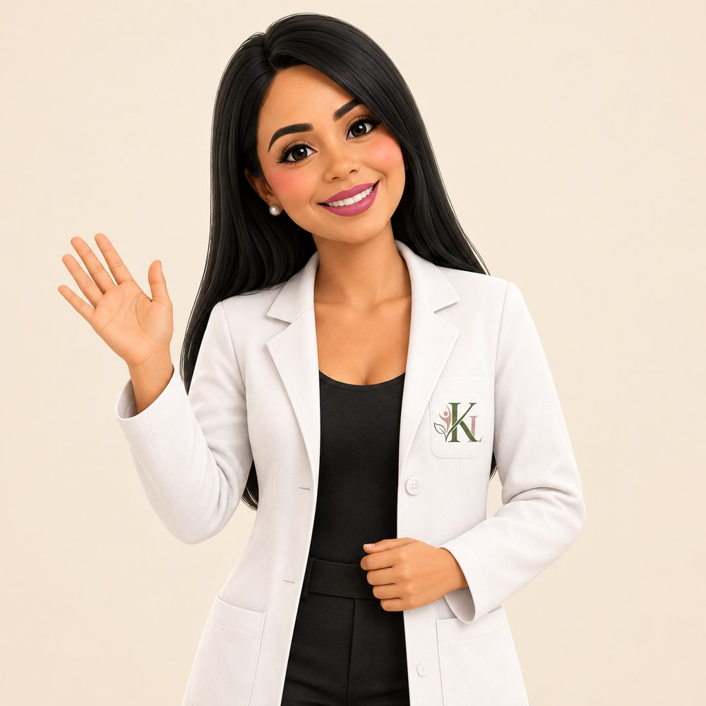</div>
          <svg class="seal-badge" viewBox="0 0 200 200" role="img" aria-label="Sello: cero sellos en la tiendita">
            <polygon points="60,4 140,4 196,60 196,140 140,196 60,196 4,140 4,60" fill="var(--seal)" stroke="#CDA8A1" stroke-width="4"/>
            <text x="100" y="62" text-anchor="middle" fill="#fff" font-size="15" letter-spacing="2">TIENDITA</text>
            <text x="100" y="128" text-anchor="middle" fill="#CDA8A1" font-size="78">0</text>
            <text x="100" y="158" text-anchor="middle" fill="#fff" font-size="22" letter-spacing="3">SELLOS</text>
            <text x="100" y="178" text-anchor="middle" fill="#A9BAAF" font-size="10" letter-spacing="2" style="font-weight:500">Y MUCHO POR SERVIR</text>
          </svg>
        </div>
        <figcaption>Lic. Karina Lara · Nutrióloga clínica</figcaption>
      </figure>
    </div>
    <div class="facts">
      <div><b>15 horas</b><span>3 jornadas de 5 h</span></div>
      <div><b>10 actividades</b><span>50% aprendizaje activo</span></div>
      <div><b>20 a 35</b><span>docentes por grupo</span></div>
      <div><b>Plan a 30 días</b><span>producto final por equipo</span></div>
    </div>
  </div>
</header>

<section id="problema">
  <div class="wrap">
    <span class="eyebrow">El punto de partida</span>
    <h2>Un problema con dos caras</h2>
    <p class="lede">México enfrenta a la vez exceso de peso y carencias nutricionales. Estos datos describen poblaciones, no a un estudiante en particular, y por eso la respuesta escolar empieza por el entorno.</p>
    <div class="stats">
      <div class="stat a"><b>36.5%</b><span>de escolares de 5 a 11 años con sobrepeso u obesidad</span></div>
      <div class="stat b"><b>40.4%</b><span>de adolescentes con sobrepeso u obesidad</span></div>
      <div class="stat c"><b>1.3 M</b><span>de niñas y niños con desnutrición crónica</span></div>
    </div>
    <p class="note">Fuentes: ENSANUT Continua 2023 (INSP) y UNICEF México. La anemia en escolares fue de 3.2% en ENSANUT 2022-2023 y fue mayor en contextos vulnerables.</p>
    <figure class="shot shot-wide" style="margin-top:40px">
      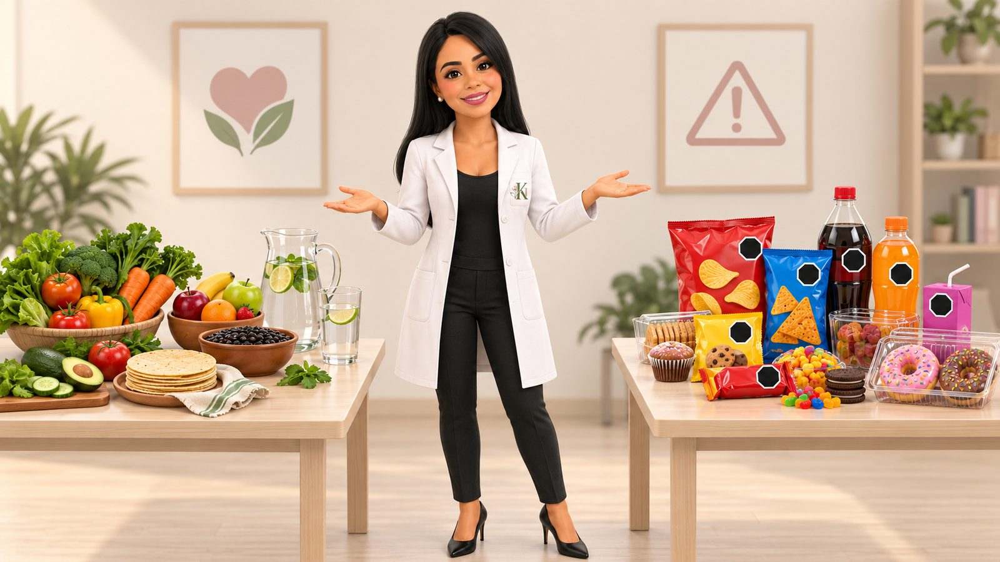
    </figure>
    <div class="duo">
      <div class="x"><h3>Exceso de energía</h3><ul><li>Bebidas azucaradas</li><li>Productos ultraprocesados</li><li>Porciones frecuentes y densas</li></ul></div>
      <div class="y"><h3>Carencias nutrimentales</h3><ul><li>Poca variedad</li><li>Bajo consumo de hierro o fibra</li><li>Acceso irregular a alimentos frescos</li></ul></div>
    </div>
  </div>
</section>

<section class="curr">
  <div class="wrap curr-grid">
    <div>
      <span class="eyebrow">La idea central</span>
      <blockquote>La tiendita funciona como un currículo cotidiano: el alumnado aprende mientras observa, compra y comparte.</blockquote>
      <p class="lede">Qué alimentos se consideran normales, qué opciones se ven primero, cuánto cuesta cuidarse y qué higiene se acepta. La escuela enseña todo eso sin decir una palabra.</p>
    </div>
    <div>
      <span class="eyebrow">Cinco factores que orientan lo que se come</span>
      <ul class="factors">
        <li><b>Disponibilidad</b><span>Lo que existe</span></li>
        <li><b>Precio</b><span>Lo que se puede pagar</span></li>
        <li><b>Tiempo</b><span>Lo que cabe en el recreo</span></li>
        <li><b>Visibilidad</b><span>Lo que se encuentra primero</span></li>
        <li><b>Normas sociales</b><span>Lo que el grupo considera normal</span></li>
      </ul>
    </div>
  </div>
  <div class="wrap" style="margin-top:48px">
    <figure class="shot shot-wide">
      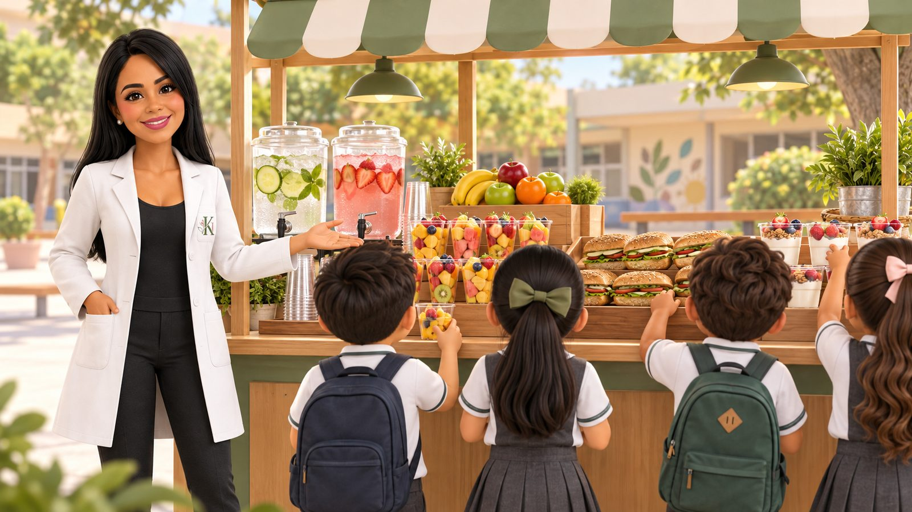
    </figure>
  </div>
</section>

<section id="ruta">
  <div class="wrap">
    <span class="eyebrow">Ruta de aprendizaje</span>
    <h2>Tres jornadas, del diagnóstico a la acción</h2>
    <p class="lede">Cada día cierra con un producto concreto. Trabajas con la oferta real de tu tiendita y con datos de tu plantel.</p>
    <div class="days">
      <article class="day d1">
        <header><small>Día 1 · 5 horas</small><h3>Comprender</h3></header>
        <div class="day-img">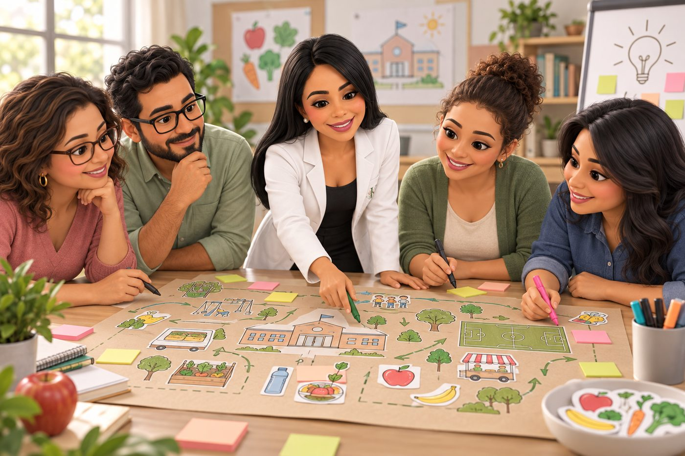</div>
        <div class="body">
          <p class="q">¿Qué comen nuestros estudiantes y qué factores influyen?</p>
          <ul><li>Nutrición infantil en México y doble carga de malnutrición</li><li>Mapa del entorno alimentario</li><li>Detectives del etiquetado</li><li>El azúcar y la sal que no vemos</li></ul>
          <p class="prod"><b>Producto del día</b>Mapa del entorno y diagnóstico inicial de tu escuela</p>
        </div>
      </article>
      <article class="day d2">
        <header><small>Día 2 · 5 horas</small><h3>Transformar</h3></header>
        <div class="day-img"></div>
        <div class="body">
          <p class="q">¿Cómo ofrecer y preparar alimentos saludables con seguridad y viabilidad?</p>
          <ul><li>Oferta permitida, no permitida y reformulable</li><li>Higiene, temperaturas y contaminación cruzada</li><li>Construye el refrigerio escolar ideal</li><li>Menú saludable con presupuesto limitado</li></ul>
          <p class="prod"><b>Producto del día</b>Prototipo de menú y protocolo operativo</p>
        </div>
      </article>
      <article class="day d3">
        <header><small>Día 3 · 5 horas</small><h3>Implementar</h3></header>
        <div class="day-img"></div>
        <div class="body">
          <p class="q">¿Cómo movilizamos a la comunidad y medimos cambios reales?</p>
          <ul><li>Mensajes sin culpa ni estigma</li><li>Consejo escolar en acción</li><li>Auditoría de publicidad y disponibilidad</li><li>Reto de los 30 días y presentación final</li></ul>
          <p class="prod"><b>Producto del día</b>Plan de acción y evaluación a 30 días</p>
        </div>
      </article>
    </div>
    <div class="agenda">
      <table>
        <caption>Así se vive el Día 1</caption>
        <thead><tr><th>Hora</th><th>Bloque</th><th>Qué haces</th></tr></thead>
        <tbody>
          <tr><td>00:00–00:30</td><td>Apertura y acuerdos</td><td>Encuadre, expectativas y evaluación diagnóstica</td></tr>
          <tr><td>00:30–01:15</td><td>Nutrición infantil en México</td><td>Lectura guiada de datos y mensajes clave</td></tr>
          <tr><td>01:15–02:00</td><td>Más allá del peso</td><td>Análisis de casos sobre doble carga, hábitos, inequidad y estigma</td></tr>
          <tr><td>02:15–03:10</td><td>Entorno alimentario escolar</td><td>Mapa de influencias dentro y alrededor del plantel</td></tr>
          <tr><td>03:10–04:10</td><td>Detectives del etiquetado</td><td>Clasificación de productos y discusión de criterios</td></tr>
          <tr><td>04:10–04:50</td><td>Diagnóstico de nuestra escuela</td><td>Semáforo de oferta, agua, prácticas, publicidad e infraestructura</td></tr>
          <tr><td>04:50–05:00</td><td>Cierre</td><td>Ticket de salida y consigna para el día 2</td></tr>
        </tbody>
      </table>
    </div>
  </div>
</section>

<section class="play" id="prueba">
  <div class="wrap">
    <span class="eyebrow">Evaluación diagnóstica</span>
    <h2>¿Cuánto sabes de tu tiendita?</h2>
    <p class="lede">Cuatro afirmaciones que Karina usa para abrir la masterclass. Responde y compara.</p>
    <div class="qwrap" id="quiz"></div>
    <p class="score" id="score" aria-live="polite"></p>
  </div>
</section>

<section id="norma">
  <div class="wrap">
    <span class="eyebrow">Lineamientos vigentes</span>
    <h2>Lo obligatorio, lo recomendable y lo que decide tu escuela</h2>
    <div class="reg">
      <ol class="tl">
        <li><b>30 SEP 2024</b><span>Se publican los nuevos lineamientos en el DOF</span></li>
        <li><b>29 MAR 2025</b><span>Aplicación obligatoria en las escuelas</span></li>
        <li><b>ACTUALIDAD</b><span>Vigilancia, capacitación y mejora continua</span></li>
      </ol>
      <div class="rule">
        <p class="big">Si tiene un sello o una leyenda precautoria, no se vende en la escuela.</p>
        <p class="sm">Aplica a escuelas públicas y privadas de todos los niveles. Y ojo: la ausencia de sellos no garantiza que el producto sea la mejor opción cotidiana.</p>
      </div>
    </div>
    <div class="temps">
      <div class="temp cold"><b>≤ 7 °C</b><span>Alimentos fríos</span></div>
      <div class="temp hot"><b>&gt; 60 °C</b><span>Servicio caliente</span></div>
      <div class="temp re"><b>≥ 74 °C</b><span>Recalentamiento</span></div>
    </div>
    <p class="note">Medir y registrar protege mejor que confiar en la apariencia. Aprenderás a colocar el termómetro y a llevar el registro.</p>
  </div>
</section>

<section style="padding-top:0">
  <div class="wrap">
    <span class="eyebrow">Diez actividades prácticas</span>
    <h2>Aprender haciendo, con material de tu propia escuela</h2>
    <div class="acts">
      <div class="act"><div class="act-img"></div><small>Actividad 1 · 35 min</small><h3>Mapa del entorno alimentario</h3><p>Tres barreras, tres facilitadores y una prioridad modificable en 30 días.</p></div>
      <div class="act"><div class="act-img">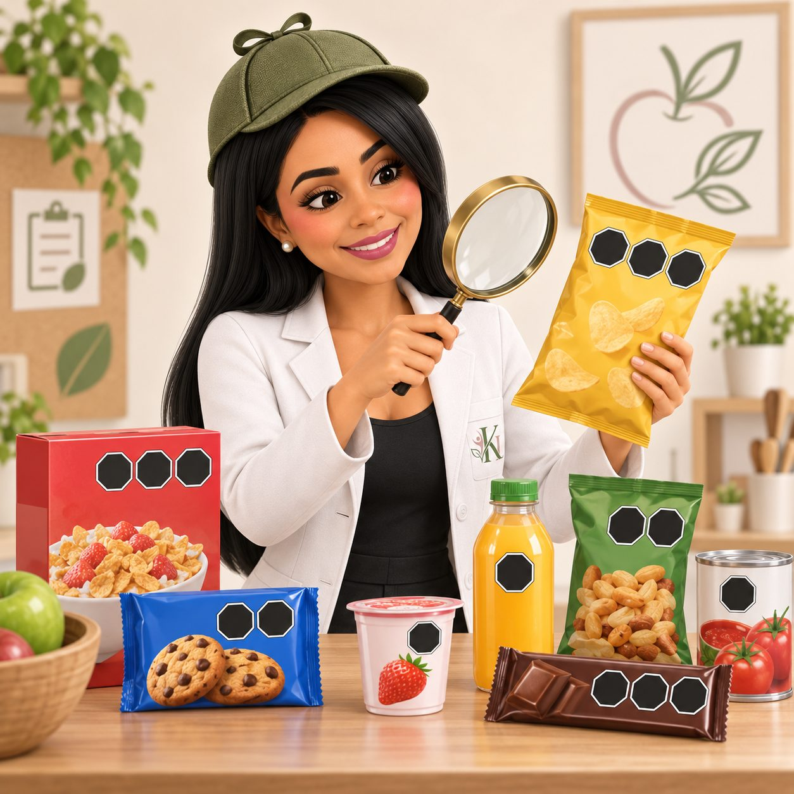</div><small>Actividad 2 · 40 min</small><h3>Detectives del etiquetado</h3><p>Envases reales: sellos, leyendas e ingredientes, con evidencia visible.</p></div>
      <div class="act"><div class="act-img">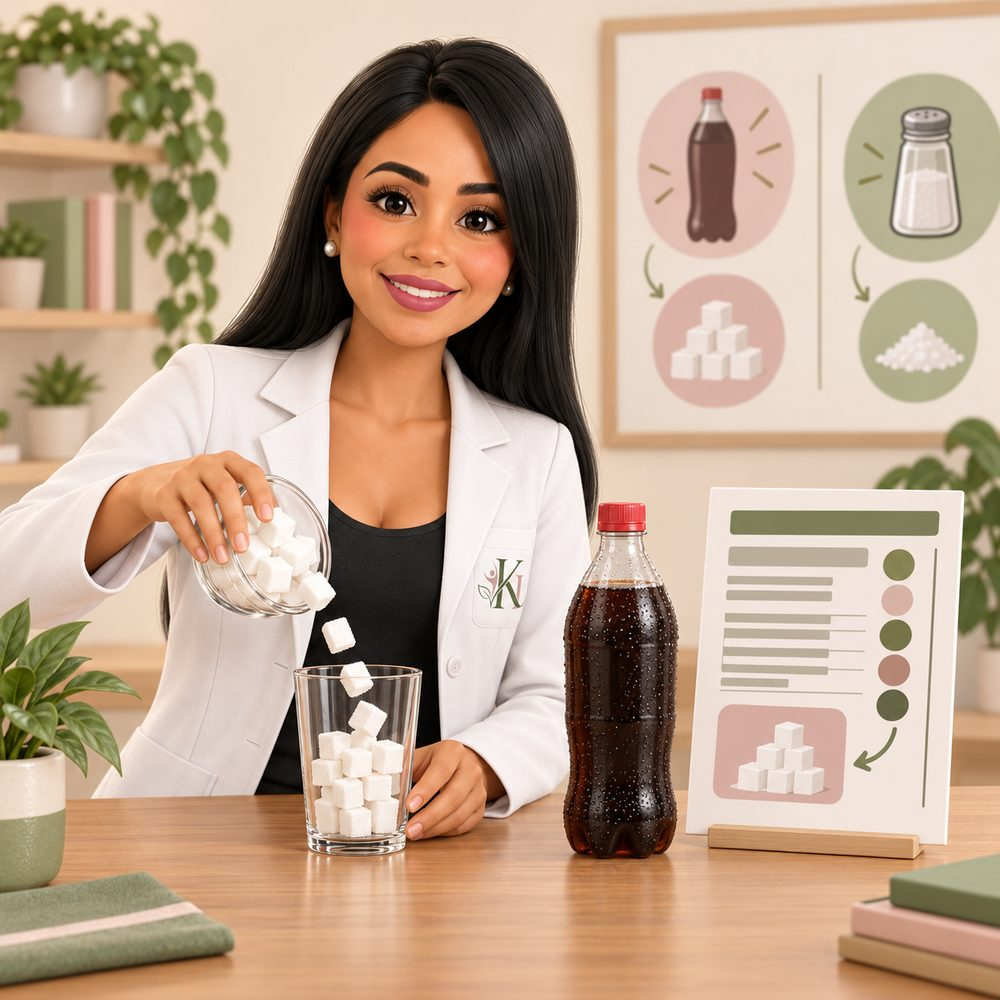</div><small>Actividad 3 · 35 min</small><h3>El azúcar y la sal que no vemos</h3><p>Estima con cucharas y compara con el contenido declarado del envase.</p></div>
      <div class="act"><div class="act-img"></div><small>Actividad 4 · 30 min</small><h3>La ruta invisible de la contaminación</h3><p>Diamantina, celular y monedas para ver cómo viaja un riesgo al cobrar y servir.</p></div>
      <div class="act"><div class="act-img">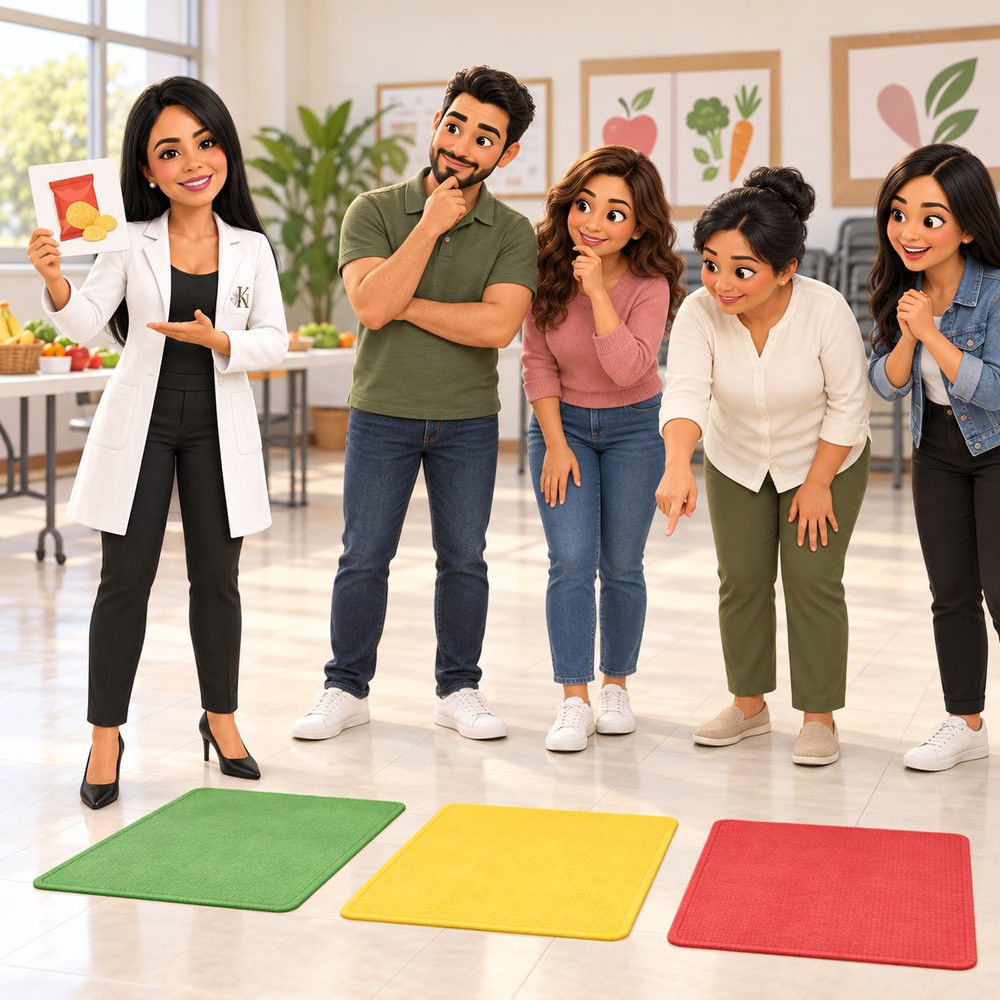</div><small>Actividad 5 · 40 min</small><h3>El semáforo de la tiendita</h3><p>Verde, amarillo o rojo para prácticas y alimentos. Evalúa prácticas, no personas.</p></div>
      <div class="act"><div class="act-img">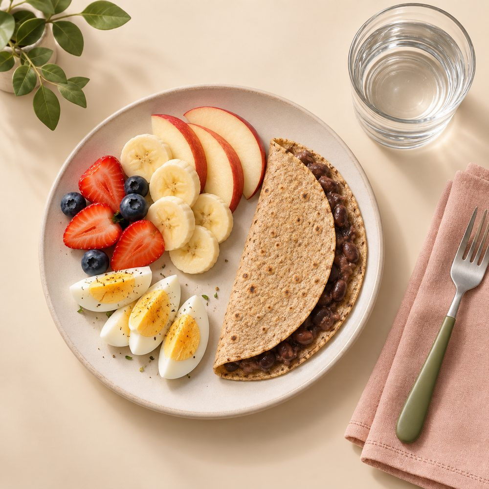</div><small>Actividad 6 · 50 min</small><h3>Construye el refrigerio ideal</h3><p>Fruta o verdura, cereal, leguminosa y agua, con porción, precio y presentación.</p></div>
      <div class="act"><div class="act-img">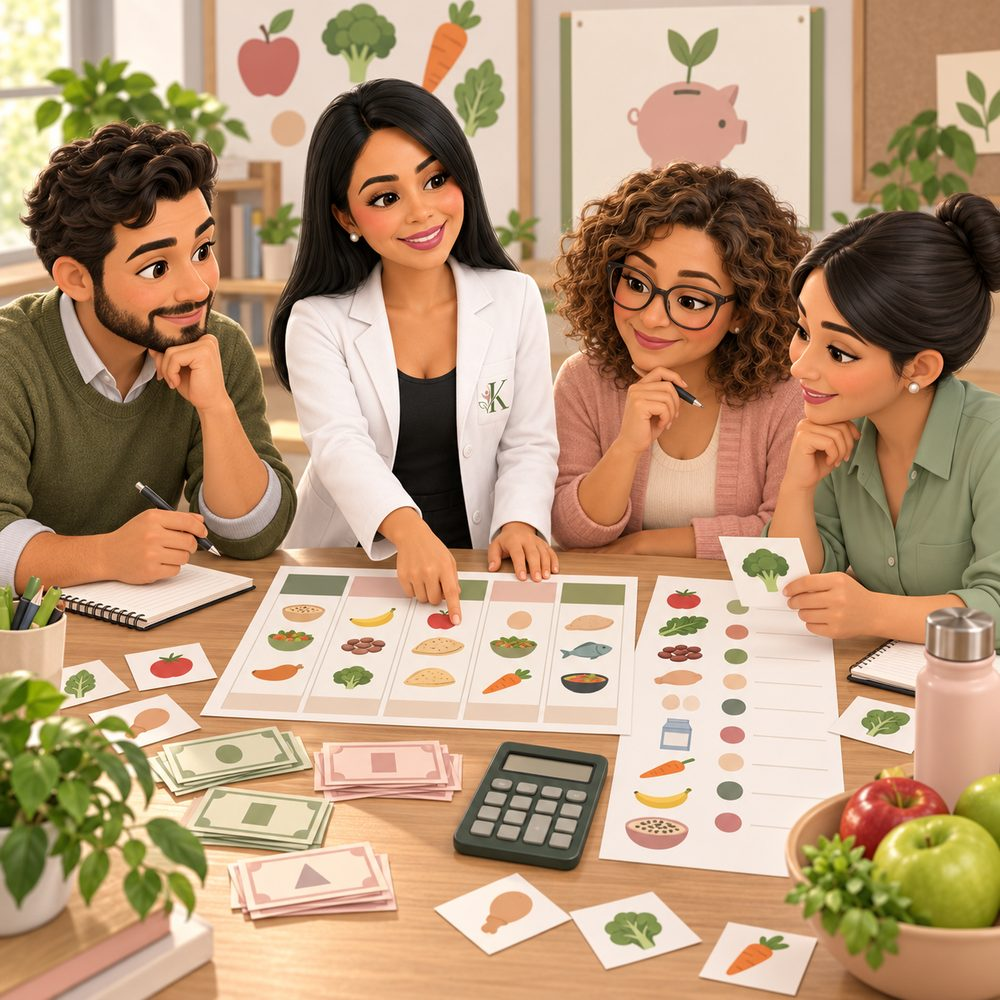</div><small>Actividad 7 · 50 min</small><h3>Menú con presupuesto limitado</h3><p>Cinco días con precio y merma, considerando empaque, energía y mano de obra.</p></div>
      <div class="act"><div class="act-img">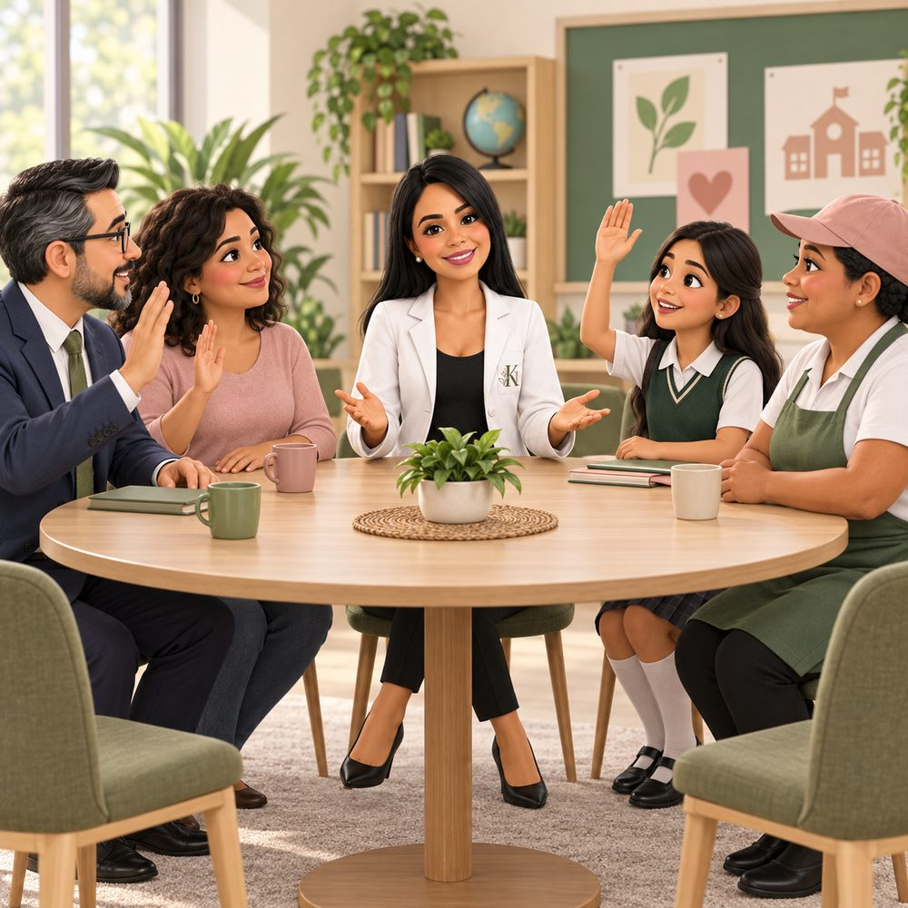</div><small>Actividad 8 · 45 min</small><h3>Consejo escolar en acción</h3><p>Dirección, familia, estudiantes y tiendita negocian tres acuerdos realistas.</p></div>
      <div class="act"><div class="act-img">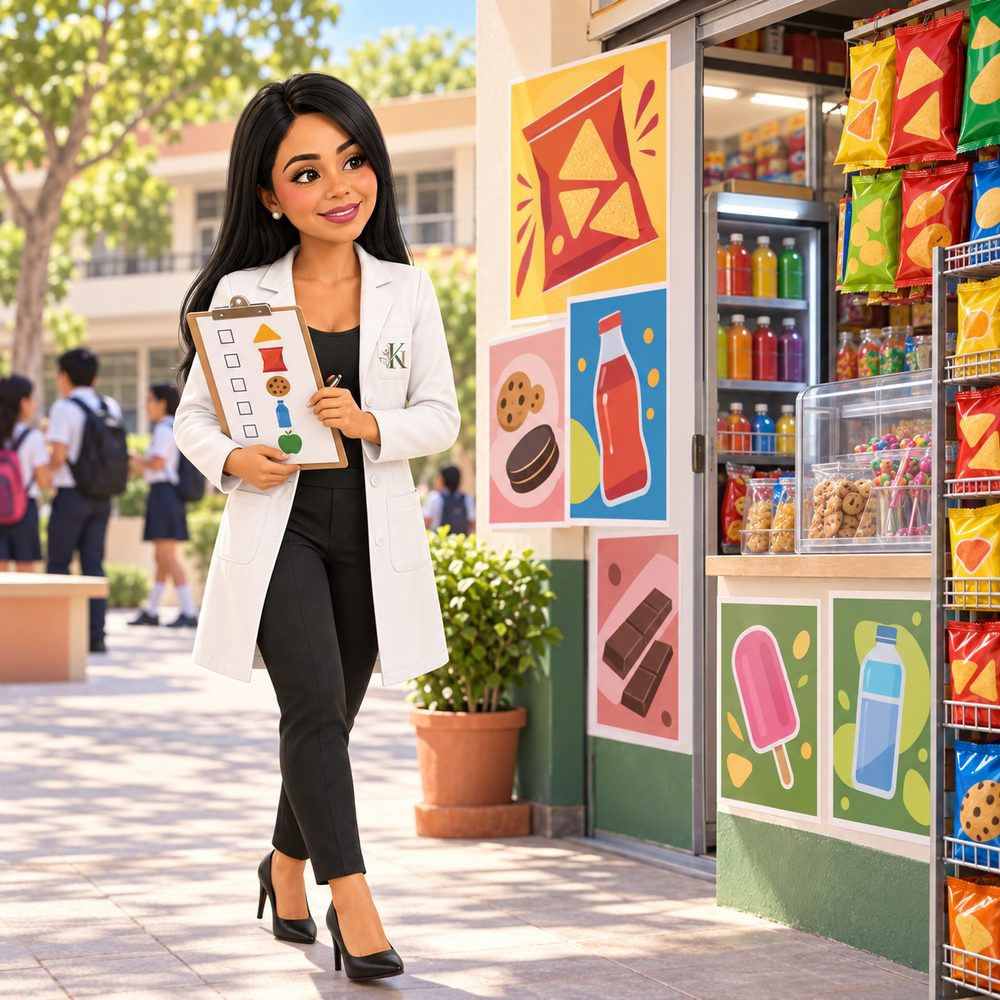</div><small>Actividad 9 · 35 min</small><h3>Auditoría de publicidad</h3><p>Marcas, colores, refrigeradores y carteles: ¿qué se ve primero, el agua o la fruta?</p></div>
      <div class="act"><div class="act-img"></div><small>Actividad 10 · 60 min</small><h3>Reto de los 30 días</h3><p>Objetivo, acciones, responsables e indicadores de tu plan escolar.</p></div>
    </div>
  </div>
</section>

<section class="take">
  <div class="wrap take-grid">
    <div>
      <span class="eyebrow">Al terminar podrás</span>
      <h2>Salir con un plan, no solo con ideas</h2>
      <ul class="check">
        <li>Interpretar la situación nutricional infantil de México</li>
        <li>Aplicar los lineamientos escolares vigentes</li>
        <li>Reconocer riesgos de higiene y conservación</li>
        <li>Diseñar actividades sin estigma corporal</li>
        <li>Proponer una oferta viable para la tiendita</li>
        <li>Construir un plan escolar medible</li>
      </ul>
    </div>
    <div>
      <span class="eyebrow">Metas sugeridas para medir tu avance</span>
      <div class="tblwrap">
      <table class="ind">
        <thead><tr><th>Indicador</th><th>Meta</th></tr></thead>
        <tbody>
          <tr><td>Productos preenvasados sin sellos</td><td>100%</td></tr>
          <tr><td>Días con agua simple disponible</td><td>100%</td></tr>
          <tr><td>Días con fruta o verdura</td><td>100%</td></tr>
          <tr><td>Personal capacitado</td><td>100%</td></tr>
          <tr><td>Temperaturas dentro de rango</td><td>≥ 95%</td></tr>
          <tr><td>Satisfacción en prueba piloto</td><td>≥ 80%</td></tr>
        </tbody>
      </table>
      </div>
    </div>
  </div>
</section>

<section>
  <div class="wrap">
    <div class="who">
      <div class="who-portrait"></div>
      <div>
        <span class="eyebrow">Imparte</span>
        <h2 style="max-width:none">Lic. en Nutrición Karina Lara</h2>
        <p class="lede">Tu salud, mi prioridad. Una masterclass que une nutrición, regulación, higiene y diseño de acciones escolares, sin culpar a estudiantes ni a familias y sin comentar el cuerpo de nadie: se trabaja sobre el entorno.</p>
      </div>
    </div>
    <div class="for">
      <span>Docentes</span><span>Directivos</span><span>Orientación</span><span>Educación física</span><span>Personal de apoyo</span><span>Responsables de la cooperativa o tiendita</span>
    </div>
  </div>
</section>

<section id="registro" style="padding-top:0">
  <div class="wrap">
    <div class="reg-box">
      <div class="bgimg"></div>
      <div>
        <h2 style="max-width:14ch">Lleva tu tiendita a la siguiente etapa</h2>
        <p>Cupo de 20 a 35 personas por grupo. Escríbenos y te compartimos fechas, sede y modalidad.</p>
        <div class="cta-row"><a class="btn" href="#registro">Quiero mis datos de inscripción</a></div>
      </div>
      <dl>
        <div><dt>Duración</dt><dd>15 horas en 3 jornadas de 5 horas</dd></div>
        <div><dt>Modalidad</dt><dd>Presencial o híbrida</dd></div>
        <div><dt>Fechas y costo</dt><dd>Por confirmar</dd></div>
        <div><dt>Llevas contigo</dt><dd>Lista de productos de tu tiendita y datos básicos del plantel</dd></div>
      </dl>
    </div>
  </div>
</section>

<footer>
  <div class="wrap">
    Fuentes principales: DOF (lineamientos de alimentación escolar 2024), SEP y Vida Saludable, NOM-251-SSA1-2009, ENSANUT 2022-2023 y UNICEF México.
    <ul>
      <li><a href="https://dof.gob.mx/website/nota_detalle_popup.php?codigo=5740005">DOF · Lineamientos</a></li>
      <li><a href="https://dof.gob.mx/normasOficiales/3980/salud.htm">DOF · NOM-251</a></li>
      <li><a href="https://www.vidasaludable.gob.mx/storage/recursos/materiales/Manual-cooperativas.pdf">Manual de cooperativas escolares</a></li>
    </ul>
  </div>
</footer>

<script>
(function(){
  var Q=[
    {q:"Un producto sin sellos siempre es adecuado para venderse en una escuela.",a:false,e:"No siempre. La ausencia de sellos no garantiza que sea buena opción cotidiana; por ejemplo, ciertos cereales con azúcares añadidos no se recomiendan."},
    {q:"Más de uno de cada tres escolares mexicanos vive con sobrepeso u obesidad.",a:true,e:"Sí: 36.5% de escolares de 5 a 11 años. Por eso hay que cambiar el entorno, no solo dar mensajes."},
    {q:"La dirección escolar debe vigilar que se cumplan los lineamientos.",a:true,e:"Sí. La dirección vigila el cumplimiento y los proveedores también tienen obligaciones."},
    {q:"Los guantes sustituyen el lavado de manos.",a:false,e:"No. Los guantes nunca sustituyen el lavado de manos."}
  ];
  var box=document.getElementById('quiz'),score=document.getElementById('score'),done=0,right=0;
  Q.forEach(function(item,i){
    var c=document.createElement('div');c.className='qcard';
    c.innerHTML='<p class="q">'+item.q+'</p><div class="opts"><button type="button" id="q'+i+'t">Verdadero</button><button type="button" id="q'+i+'f">Falso</button></div><p class="fb" id="fb'+i+'"></p>';
    box.appendChild(c);
    [true,false].forEach(function(v){
      var b=c.querySelector('#q'+i+(v?'t':'f'));
      b.addEventListener('click',function(){
        var bs=c.querySelectorAll('button');bs.forEach(function(x){x.disabled=true});
        var ok=(v===item.a);b.classList.add(ok?'ok':'bad');
        if(!ok){c.querySelector('#q'+i+(item.a?'t':'f')).classList.add('ok')}
        c.querySelector('.fb').innerHTML='<b>'+(ok?'¡Correcto! ':'Casi. ')+'</b>'+item.e;
        done++;if(ok)right++;
        score.textContent='Llevas '+right+' de '+done+' aciertos'+(done===Q.length?'. En la masterclass profundizas en cada una.':'.');
      });
    });
  });
})();
</script>
